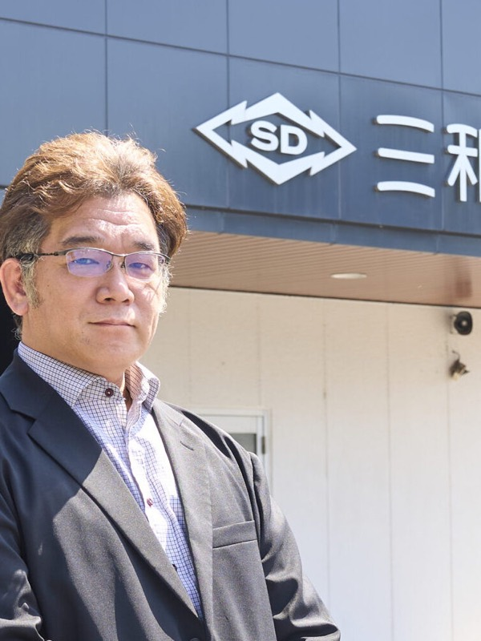
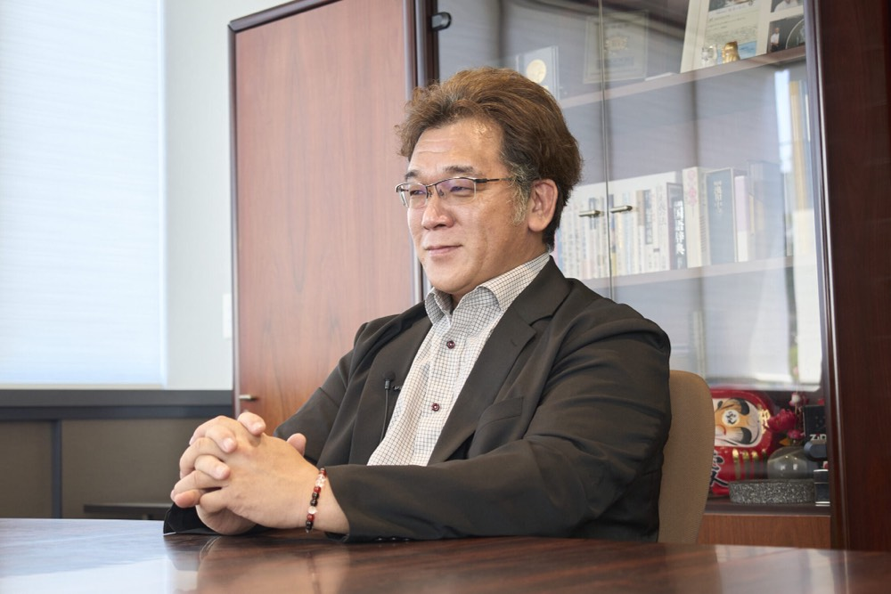
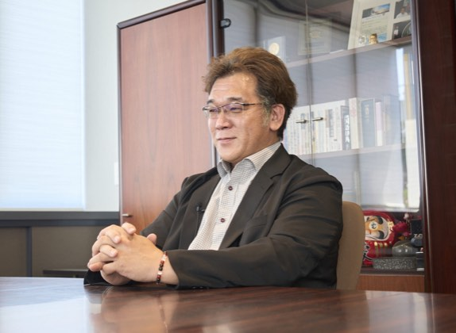
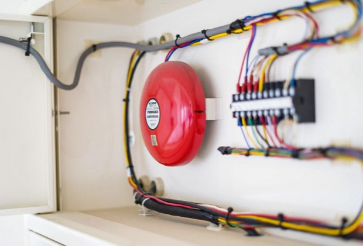
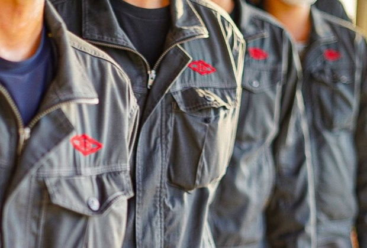
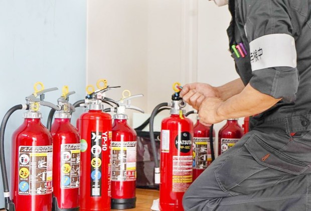
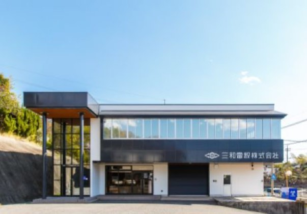
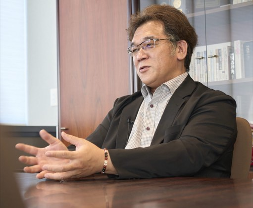

防災のプロとして命を守る
三木 康敬yasuhiro miki
三和電設株式会社 代表取締役
大学卒業後、大手防災メーカーであるニッタン株式会社に入社し、本社(東京)や九州支社(福岡)等で現場経験を積む。その後、家業である三和電設株式会社へ戻り、2009年に代表取締役に就任。リーマンショックや巨額の負債という窮地を現場第一主義で乗り越え、現在は岡山県南域を中心に消防設備の保守点検・工事を通じて地域の安全を支え続けている。
企業サイトを見るCHAPTER 01
反発精神から飛び込んだ防災業界への原点

Qどのような経緯で防災業界に入り、家業に戻られたのでしょうか?
A私の父が三和電設の初代代表取締役なのですが若い頃は強い反発精神がありました。父が自営業をしていることで周囲から特別扱いされたり、融通が利いたりすることに子供心ながらに嫌だったんです。親の力に頼るのではなく、「自分の実力を試したい」という反骨心が私の原動力でした。父の背中を追うだけでなく、いつかビジネスの場で父を越え、認めさせたいという思いがあり、大学卒業後は家業の取引先である大手メーカーに入社しました。商流の異なる立場に身を置くことで、父とは違う視座からビジネスに関わりたいと考えたからです。
Q当時は経営者になるつもりは全くなかったそうですが、そこから家業に戻られたきっかけは何だったのでしょうか?
A転機が訪れたのは20代後半の時です。父 の右腕として創業初期から働いており、私の保育園の送り迎えまでしてくれた年配の恩人がいました。その方から「わしも年だし後継ぎがいない。親父の跡を継げとは言わないから、わしを助けてくれ」と頭を下げられたんです。そこまで言われたら、断るわけにはいかないと思いました。当時携わっていた博多の地下鉄開通の工事が終わるタイミングで28歳頃に三和電設へ戻る決意をしました。
CHAPTER 02
専門特化の強みと「命と建物を守る」という覚悟
Q事業の特徴や強みについて教えてください。
A当社は消防用設備の保守点検および工事を専門に行っています。電気関係と水関係の設備に分かれますが特に電気系の消防設備をメインに手がけています。拠点は本社と水島営業所の2カ所です。この業界の最大の強みは「消防法」という国家の法律が大前提として設けられており定期的なメンテナンスが義務付けられている点です。
そのため景気の変動に関わらず仕事が完全になくなるということがありません。良い意味で「社会的ニーズが途絶えることのない」安定したビジネスモデルなのです。さらに過去の悲惨な火災事故などを契機に法令は時代とともに厳格化されていきます。例えば近年でいえば2009年に起きた消火器の爆発事故を受けて「製造から10年を経過した消火器は交換しなければならない」という法令が設けられたり新宿の雑居ビル火災の後に規制が強化されたりしました。
安全を守るために法令が追加され仕事が増えることはあっても規制が緩くなって仕事が消えていくことは絶対にありません。
Q顧客のターゲット層や営業エリアにはどのようなこだわりがありますか?
A当社の主なお客様は岡山県内の企業や施設であり、ほぼ100%地域密着で対応しています。営業エリアは「車で片道1時間圏内」を目安にしています。なぜなら消防設備に誤作動などが起きてベルが鳴り響いた際、すぐに現場へ駆けつけなければならないからです。ベルが鳴りっぱなしの状態で1時間以上もお客さまを放置することは信頼関係を揺るがす重大な問題になります。過去には他県のお客様からご依頼をいただいた時期もありましたが緊急時の迅速な対応が難しいため現在ではメーカーの代理店ネットワークを通じて同業他社をご紹介し、あえて手を離す勇気を持っています。1時間圏内に絞ることで高い品質と安心をお届けしています。






CHAPTER 03
数々の試練への挑戦とこれからの組織づくり
Q代表取締役に就任された当時の状況とそこからの苦難についてお聞かせください。
A社長への交代は本当に突然の出来事が重なった結果でした。私が33歳の時、父が検査入院のわずか10分後に心臓が止まってしまうという大病を患いました。幸い一命を取り留めペースメーカーを植え込みましたが同じ時期に私を呼び戻してくれた恩人と祖母が同じ日に亡くなるという悲劇が起きたのです。長年の右腕と母親を同時に失った父は完全に心が折れてしまった様で「社長を代わってくれ」と言われました。当社の決算は7月なので急遽8月から私が代表取締役に就任することになったのです。
そして代表取締役になった直後に世界を揺るがすリーマンショックが到来しました。ただでさえ景気が悪化し仕事が減少する中で、さらに追い打ちをかけるようにある日突然、父が会社経営の中で膨らませていた莫大な負債の存在が発覚したのです。当時の私の給与は、一般的な会社員の平均的な水準。自分の給料と、目の前にある天文学的な数字のギャップを前にして、「一体どうやってこの大金を返していけばいいんだ......」と、目の前が真っ暗になり、激しい眩暈を覚えたのを今でも鮮明に記憶しています。
さらに追い打ちをかけるように、会計事務所の専門的な監査が入ると、表面化していなかった未収金や売掛金の焦げ付きなど、実質的なマイナス要因が次々と浮き彫りになりました。最終的に突きつけられた実際の負債総額は、当初の想定を遥かに凌駕する規模にまで膨れ上がっていたのです。
Qその絶望的な状況をどのようにして切り抜けられたのでしょうか?
A特効薬はありませんでした。「現場に出て目の前のやれることを必死にやり、少しずつでも稼いで返すしかない」と腹をくくりました。代表取締役になってからの丸2年間は一従業員として社員と同じように毎日現場へ行き、泥まみれになって汗を流しました。当時、私の母が経理を担当していましたので現場で稼いできたお金の中から毎月返せる分を銀行へ実直に返済し続けました。
そうして現場第一で丸2年を踏ん張り3年目に入ってようやく業績が上向きになる兆しが見えてきました。そこで初めて社内会議を開いたのですが社員たちから最初に突きつけられたのは「もっと給料を上げてくれ」という言葉でした。会社を維持するだけで精一杯だった当時の私にとっては、応えてあげられない悔しさと申し訳なさで、胸が締め付けられるような意見でした。しかし同時に「これからは会社を守るだけでなく、社員の幸せや働く環境を本気で考えなければならない」と経営者として強く突き動かされた瞬間でもありました。